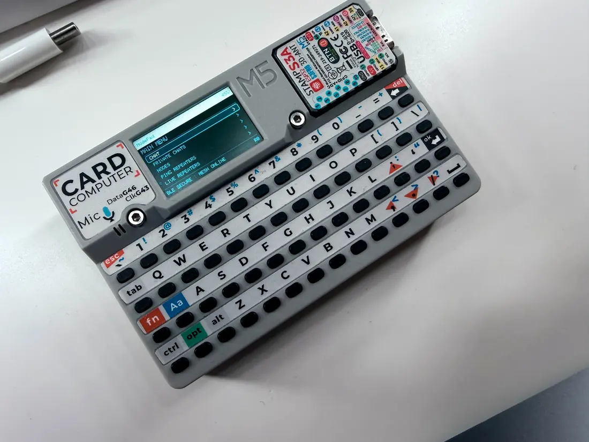
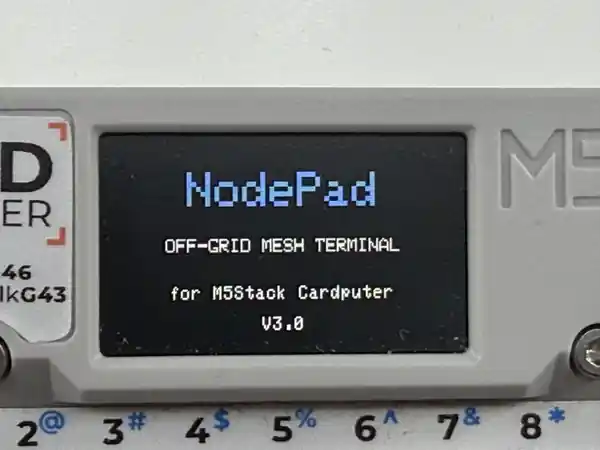
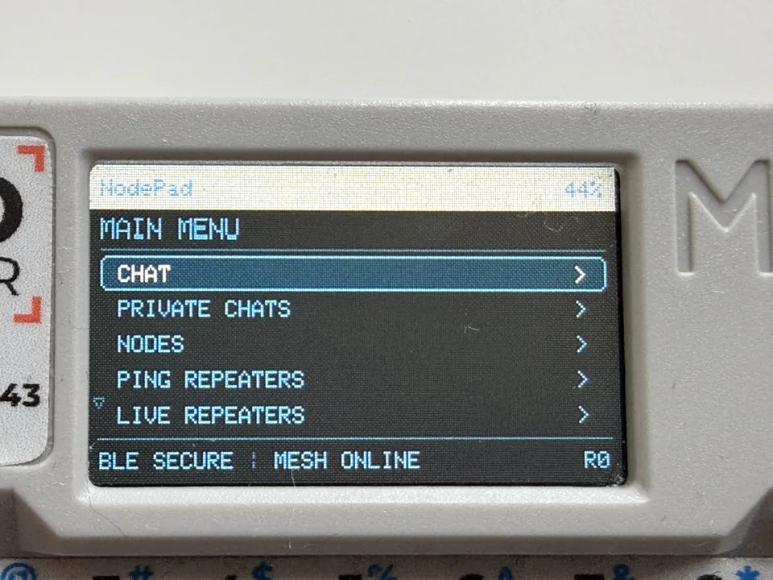

BLE Companion
Discover, pair and reconnect to your MeshCore Companion radio.
Meet NodePad v3. A compact MeshCore companion interface for the original M5Stack Cardputer. Connect, message and explore your mesh network.
Original Cardputer tested · ADV compatibility not yet verified

NodePad turns the Cardputer into a keyboard-driven BLE interface for a separate MeshCore Companion radio. The radio handles LoRa communication.
Discover, pair and reconnect to your MeshCore Companion radio.
Communicate through channels and direct conversations.
Advertisements, pings and live repeater information.
Configure supported Companion settings from NodePad's built-in web page.
Low, medium and muted notifications.
Battery information and saved settings.
A complete guide to NodePad v3.0.1 on the original M5Stack Cardputer. NodePad is the keyboard and screen; a separate, configured MeshCore BLE Companion provides the LoRa radio connection.
A separate Companion must run MeshCore Companion BLE firmware and be powered on. Disconnect other phone apps from it before pairing.
Repeater pings are MeshCore radio path requests, not Internet or ICMP pings. Reception and results depend on RF coverage.
http://192.168.4.1 in your phone's browser.Important: MeshCore's region scope is not the radio frequency band. Use only values that match your network and local radio regulations. Incorrect settings may interrupt communication. The setup page is local to the Cardputer, not remote cloud access.
W / S — Move up / down in menus
Fn + ; / Fn + . — Alternative up / down
Enter — Select, open or send
Esc — Back; close Web Setup Wi-Fi
Fn + , / Fn + / — Left / right navigation
1–7 — Open the seven main menu items directly
R — Rescan BLE, refresh contacts or scan repeaters where available
Del — Delete the last PIN digit or message character
M in System — Cycle notification volume
P in System — Start local Wi-Fi setup
C in System — Show Credits
Enter in System — Change BLE Companion
Supported hardware: original M5Stack Cardputer (ESP32-S3), a separate MeshCore Companion BLE radio (Heltec V3 and XIAO Wio are tested examples), and a USB-C data cable for installation. Cardputer ADV support remains unverified.
Not a standalone LoRa radio: the Cardputer communicates via BLE; the external Companion handles LoRa. A repeater-only or USB-only radio is not a substitute for a BLE Companion.
Security: the paired radio and PIN are stored locally on the Cardputer. Treat the PIN and temporary Wi-Fi password as private. Bluetooth connection does not guarantee LoRa network reachability.
For firmware and troubleshooting, see the GitHub repository and issue tracker.


No Arduino IDE required. Connect your original Cardputer using a USB-C data cable and use Chrome or Edge on a desktop computer.
The web installer uses the complete v3 factory firmware image.
Powered by ESP Web Tools. USB access is required.
Manual download